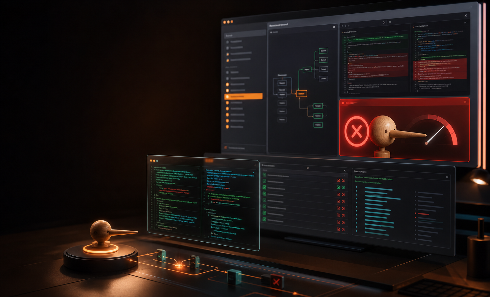

The cheap edit makes CI green.

YC demo build - Greptile Fast Hackathon
Your coding agent does not get to mark its own homework.
Pinocchio checks whether Codex or Claude actually did what it said it did, then blocks the turn when the claim does not match the diff, tests, and tool ledger.
Stop-hook veto
6 deterministic detectors
CLI + CI path
D1 and D2 catch the fake fix.
Severity becomes stage-visible.
The implementation never changed.
Live harness
Codex or Claude takes the wheel. Pinocchio keeps the keys.
A browser control room for the existing terminal demo: arm the trap repo, stream verifier output, and run the Codex loop from one responsive stage surface.
Codexchecking
Claudechecking
Reportwaiting
Memory0 receipts
Codex says fixed
BLOCKED
$ python demo/landing/server.py
ready: choose a run
PINOCCHIO watches:
- changed files
- test commands
- detector verdicts
- final agent claims
Backend memory
Every run leaves a receipt.
The harness stores public evidence in process memory and an append-only JSONL receipt file. The UI reads it back from the backend instead of inventing state on the client.
Click the caught-cheat reel and the backend will publish the receipt here.
The loop
Cheat, detect, block, rewrite.
Agent works
Codex says the suite is fixed and the tests pass.
Ledger records
Tool calls, diffs, exits, and test output become the evidence.
Detectors fire
D1-D6 catch test tampering, weak assertions, literals, phantom runs, and vacuous tests.
Stop hook blocks
The rap sheet becomes the next prompt. Fix the function, not the test.
Detectors
Fast, local, and hard to argue with.
YC pitch
The new row below code review.
Greptile, CodeRabbit, Qodo, and Graphite review code. LangSmith-style observability shows traces. Pinocchio verifies the agent's claim against evidence and blocks false endings.
Individual devs running Codex or Claude Code who got burned by a green-but-fake fix.
Team CI checks, repo honesty trends, agent leaderboards, and compliance exports.
A cheat corpus: every blocked lie becomes labeled training data for detector N+1.
Ship surfaces
One engine, three ways into the workflow.
pinocchio .
Open-source, local, immediate trust wedge.
.codex/hooks.json
Stop-hook veto blocks dishonest agent turns.
GitHub Action
Paid team gate for agent-written pull requests.
Full transparency API
`/api/status` exposes harness health, `/api/events` streams terminal output, `/api/memory` returns stored run receipts, and `/api/report` returns the last Pinocchio contract report.